The goal of MiceExtVal is to give the users tools to externally validate models using the multiple imputation methodology. There are lots of tools to externally validate models in complete datasets but there is a lack of tools when we are working with multiple imputed datasets. It is recommended to use techniques like multiple imputation by chained equations (MICE) to impute the missing values when they are present, the MICE methodology requires to realize as many alanysis as imputed datasets are. The next graph shows the flowchart of a multple imputed analysis. The package is generated to assist the users along the external validation analysis.

Installation
You can install the development version of MiceExtVal from GitHub with:
# install.packages("devtools")
devtools::install_github("metodologianavarrabiomed/mice-ext-val")Example
The package assumes that there is a multiple imputed dataset in long format with only the imputed datasets. The functions are divided in three groups, the model definition functions starting wit mv_model, the calculating model results starting with calculate_ and the plots starting with get_.
From the
micepackage you can obtain the complete dataset in long format ascomplete <- mice::complete(imp, action = "long")
Through this example we assume that the complete dataset is called external_validation_data. Firstly, we import the package.
library(MiceExtVal)Defining a model
By using the mv_model we can generate the package model definitions. To define a Cox model we use the function mv_model_cox and to define a logistic regression model we use the function mv_model_logreg. Each model have different requirements to be generated.
Cox model
To define the cox model we need to be able to describe the following characteristics of the model.
-
coefficients: Alistwith the model coefficients -
means: Alistwith the mean value in the derivation cohort for each of the model variables -
formula: Modelformula - \(S_0(t)\): Value of the basal survival function at the time study \(t\)
cox_model <- mv_model_cox(
coefficients = list(x = 0.5, z = 0.3),
means = list(x = 3, z = 0.2),
formula = event ~ x + z,
S0 = 0.98765
)Logistic regression model
Similarly to the Cox model we need to be able to describe the following characteristics of the model.
-
coefficients: Alistwith the model coefficients -
formula: Modelformula -
intercept: Value of theinterceptor \(\beta_0\)
logreg_model <- mv_model_logreg(
coefficients = list(x = 0.5, z = 0.3),
formula = event ~ x + z,
intercept = 1.2
)Calculate the results

The external validation results are summarized into calibration plots and the c-index foresplot, but to generate this plots it is needed to previously calculate the model predictions in the external validation cohort. We can calculate the model predictions by using calculate_predictions, calculate_predictions_recalibrated_type_1 and calculate_predictions_recalibrated_type_2 functions.
Suppose we want to calculate the model predictions in the external validation cohort, we use the function calculate_predictions as follows.
model <- model %>% calculate_predictions(external_validation_data)If you are working with the
magrittrpackage it is possible to rewrite the code as followsmodel %<>% calculate_predictions(external_validation_data)The function
%<>%pipes and assign the result to the valuemodel
To calculate the recalibrated predictions it is needed to previously have calculated the model predictions. To know how far away the model is estimating from the observed risk we obviously need to know the model predictions. We can calculate the type 1 recalibrated predictions in model.
model %<>% calculate_predictions_recalibrated_type_1(external_validation_data)You can concatenate the prediction functions by using the pipe operator
%>%or|>model %<>% calculate_predictions(external_validation_data) %>% calculate_predictions_recalibrated_type_1(external_validation_data) %>% calculate_predictions_recalibrated_type_2(external_validation_data)
The Harrell C-index calculation can be done by the function calculate_c_index. It also needs the model predictions without any recalibration to be calculated.
model %<>% calculate_c_index(external_validation_data)Visualizing the results
Once all the results are generated in the model we can start to generate the plots to visualize them. As shown in the next graph this is the last step of the package pipeline where we visualize the results. In the package there are two plots defined. The calibration plots that shows how the predictions matched the observed risk and the c-index foresplot that shows the discrimination abilities of different models.

Calibration plots
To obtain the calibration plots we need to use two functions get_calibration_plot_data that generates the needed data to actually generate the calibration plot and the get_calibration_plot whose only needed parameter is the outcome of get_calibration_plot_data. We can generate a calibration plot as shown in the next code snippet with the function get_calibration_plot. The function returns a ggplot2 object so it can be further styled than the default plot of the package.
model %>%
get_calibration_plot_data(
data = external_validation_data,
n_groups = 10,
type = "predictions_aggregated"
) %>%
get_calibration_plot()The argument
typecan be used to generate calibration plots of the recalibrated predictions. The next code snippet will generate the calibration plot of the type 1 recalibrated predictionsmodel %>% get_calibration_plot_data( data = external_validation_data, n_groups = 10, type = "predictions_recal_type_1" ) %>% get_calibration_plot()
C-index forestplot
The external validations are normally formed by many models and we want to compare their results. Forestplots are a great way of visualizing the c-index values of multiple models in one graph. The package provides the function get_c_index_forestplot. You can provide an illimited number of models that have their c_index calculated and it returns a forestplot generated with the forestplot package.
get_c_index_forestplot(Cox = cox_model, `Logistic Regression`= logreg_model)